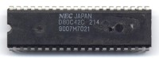
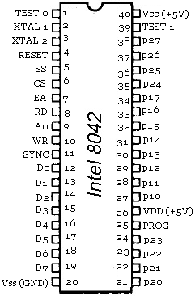
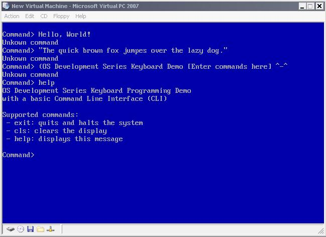

The Keyboard
This will also be the first device that we will program within this series. Excited? We have already learned how hardware programming works and have experience in it; now it time to put it to the test. Ready? This is also the first device that we will be programming that not only requires us to work with one controller but two. These controllers communicate with each other and our system. To make things more complex, both controllers have their own set of commands and way to work with them. Because of this, this chapter is fairly detailed in a couple of places.
This chapter also includes the first interactive demo: A basic command line parser. Excited?
This is also the first chapter that we look at device drivers in more depth: The importance of hardware abstraction and device drivers.
Here's the list:
- Keyboard - Back in Time and Keyboard Layout
- Inside the keyboard
- Keyboard Protocols
- Keyboard Encoder
- Keyboard Controller
- Scan Code Sets
- Keyboard IRQ
Lets get going!
Keyboard - History
Back in time
A keyboard is an input device that we use as a form of input to a computer. They were originally modeled off of a typical typewriter when they were first introduced. However the creation of the keyboard was not directly modeled from it.
When the typewriter was patented in by Christopher Latham Sholes in 1877 several manufacturers and people further developed the original design. What evolved through a series of inventions was the Telegraph. Around this same time, inside of the 1930s, IBM was using Keypunches (punch card machines combined with typewriters) in their adding machines. Early computer keyboards adapted from both the keypunch and telegraph designs.
The ENIAC (Electronic Numerical Integrator And Computer) was the first general purpose computer. The ENIAC used a punchcard reader as both an input and output device. in 1946.
In 1948, the BINAC (Binary Automatic Computer) used an electromechanically controlled typewriter as both an input and output device.
When does the keyboard evolve from these inventions? The computer keyboard that we all know does not evolve into what it is today until 1964 when MIT (with Fernando Corbató), Bell Laboratories and General Electric joined together to create the Multics (Multiplexed Information and Computing Service) machine. With the Multics, a new interface was at hand: They combined the technology of the cathode ray tube (CRT) used in televisions and electric typewriters to create a Video Display Terminal (VDT). The VDTs allowed a way for the users to be able to see what they were typing which made the computer a lot more easier to work with. Over the course of the 1970s and 1980s almost all computers had a form of VDT technology and a form of an electronic keyboard for input. Through the years, CRT and LCD displays replaced VDT technology, and the electronic keyboard also became standard among all general purpose computers.
Today, we use keyboards every time we go on a computer. Most of the keyboards layout still remains from the typewriter and the way it is used are the same. However, thanks to the new era of electronic devices keyboards now come in a lot of different forms. From the generic plastic keyboards, keyboards the fold or have back lights in them, to even laser keyboards.
Keyboard Layout
The generic keyboard layout is known as a QWERTY keyboard because the characters QWERTY are the first five characters on a typical keyboard. The QWERTY layout was purposely designed during the typewriter era to slow down the typing speed of typists because of the original mechanical limitations of early typewriters. This was primarily to decrease the amount of time between each keypress and to give the print heads enough time so they do not jam.
The QWERTY layout has been adapted in all keyboards to this day.
Inside the keyboard
What actually happens when you press a key on your keyboard? How can the keyboard tell the program what keys are down? The very text that is being read right now (that's right, me 😉 has been input by keyboard. How can the keyboard do this? Lets take a look!
Note: The exact details depend on the keyboards specific type and model. Because of this, I will only be covering a generic 102 key keyboard here.
Opening the case
You might be surprised by how keyboards came from being complex printed circuit boards (PCBs) to a single integrated board with its own microprocessor. If you were to open your keyboard, you might see something like this:

Yep, that's it. Notice how simple this is. One circuit board and a grid. The grid might be a little hard to see in the above picture. However if you look close, you might be able to see the points in the grid and notice that the points match to the key positions on a typical keyboard. This is known as the key matrix. In almost all keyboards, the circuits that make up the key matrix is broken between each point in the grid. Knowing that a key is above a point in the key matrix, when we press down the key, it presses the switch at that point completing the horizontal circuit and allowing current to run through it. The vibration of the line caused by the mechanical movement of the keys is known as bounce and is filtered out by the keyboards own microprocessor otherwise known as the Keyboard Encoder. Don't worry if this seems a little complex. We will look at everything more closely in the next couple of sections.
Keyboard Encoder
The microprocessor used by the keyboard is usually a form of the original Intel 8048, which just so happens to be also Intel's first microcontroller. This controller is known as the Keyboard Encoder. The exact keyboard encoder used is very dependent on your keyboard. There are hundreds of different keyboard encoders but they all do basically the same thing.
The rows and columns within the key grid are connected to 8 bit I/O ports on the keyboard encoder. When a key is down, the switch at that location within the key grid is closed which allows current to flow through it completing the circuit. This current enables the pin on the keyboard encoder of the correct ports that the key location corresponds to. Thus, all the controller needs to do is scan its ports to see if a key is down or not by checking if a port line is active.
If a key is down, the keyboard encoder looks up the location within its Read Only Memory (ROM) character map to see what the Scan Code is for that character and stores it in its internal 16 byte memory. The keyboards processor includes its own timer, 33 instruction set, and can even access 128K of external memory. Using its timer, it can determine if the key is down based on weather it is by user input or a bounce. If a bounce happens, it will usually be much faster then any human can input. If the key is still down when its timer reaches 0, it is reset and the character is inserted into its internal 16 byte buffer.
It is important to note that there are two keyboard controllers that we can communicate with: The keyboard encoder inside of the keyboard and the keyboard controller inside on the motherboard. We will look at the other controller a little later, don't worry 😉 For now, keep in mind that their are two controllers, and the keyboard encoder is one of them.
The keyboard encoder communicates with the system through a method defined by the keyboard protocol. Lets take a look.
Keyboard Protocol
The keyboard encoder sends data as bytes to the motherboards onboard keyboard controller. The way it is sent depends on the protocol used by the keyboards interface. This is usually a 5-pin DIN connector, 6 pin Mini-DIN connector, USB connector, SDL connector, or wireless using an infra red (IR) interface.
The 5 pin DIN connector used for AT/XT keyboards normally is on the back of the computer and looks like this:

1: Clock 2: Data 3: N/A 4: Ground 5: Vcc (+5V)
The motherboard supplies power from the power supply unit (PSU) through the Vcc and Ground pins. The clock pin is used for synchronization between the keyboards data and the system clock. The data from the keyboard is sent as serial data over the data pin.
The more common 6 pin Mini-DIN connector used for PS/2 keyboards is very similar:

1: Data 2: N/A 3: Ground 4: Vcc (+5V) 5: Clock 6: N/A
Nothing much new to add here. DIN does not really stand for anything in particular but refers to the standards group that developed it (Deutsches Institut für Normung, or in English, German Institute for Standardization).
The SDL (Shielded Data Link) connector is very simular:

A: N/A B: Data C: Ground D: Clock E: Vcc (+5V) F: N/A
Universal Serial Bus (USB) connectors are a standard that is used by a lot of different devices. Working with USB devices directly are a fairly complex topic. They only contain four pins: 1: Vcc (+5V), 2: Data-, 3: Data+, 4: Ground.
USB Legacy Support is used on most modern computers that come with USB ports. This means that these computer motherboards can emulate USB keyboards and mice as PS/2 keyboard and mice. Because of this: Communicating with a USB keyboard or mice using PS/2 compatible interfaces will work. In other words, do not worry if you have a USB keyboard or mouse as most of us do. The code and demo in this tutorial will still work fine thanks to the emulation provided by the motherboard.
As you can see, the interfaces between the keyboard and the computer are not too complex. All they do is provide a way to send data as bits between the keyboard controller and the keyboard encoder. The data are routed to the onboard or integrated keyboard controller on the motherboard. The keyboard controller takes control.
Keyboard Controller
The keyboard controller used inside of the system case is usually a form of the original 8042 keyboard controller. The keyboard controller interfaces with the keyboard encoder through the keyboards protocol and provides a way to interface to it. On most newer systems, the keyboard controller is not a separate integrated circuit (IC) but rather part of the motherboards Super Input/Output (IO) controller that also houses the floppy disk controller (FDC), parallel port interface, serial port interfaces and mouse interface. Most newer systems super IO controller uses the Low Pin Count (LPC) bus rather then Industry Standard Architecture (ISA) on the southbridge of the motherboard.
Scan Codes
A Scan Code is a data packet that represents the state of a key. If a key is pressed, released, or held down, a scan code is sent to the computers onboard keyboard controller. There are two types of scan codes: Make Codes and Break Codes. A Make Code is sent when a key is pressed or held down while a break code is sent when a key is released. There is a unique make code and break code for each key on the keyboard. The entire set of numbers that represent all of the scan codes make up the keyboards scan code set.
There are generally three different scan sets that the keyboard can use. However there is no easy way to determine what scan set it uses as the scan values are random. Because of this, you will need to use a lookup table to determine the key the scan code represents.
Lets take a look at the scan code tables. Note: These tables are important! We will need to use these to determine what keys are pressed on the keyboard. Also note: All scan codes in these tables in are hexadecimal.
These are fairly large tables so I decided to put them as a separate resource. Please see the tables in the resources section [here] (Fix link OSDevScanCodes.html).
Lets have an example. If you press shift+A keys on your keyboard, what will be the make code sent to your computer? In order to better understand this, lets take a look at the sequence of events that happens. First the shift key is pressed, then the A key is pressed. Then the A key is released followed by the shift key being released. Assuming that the scan code set is the default scan code set for modern keyboards, the left shift key make code is 0x12, break code is 0xF0 and 0x12. The make code for the A key is 0x1C while the break code is 0xF0 and 0x1C. So when this event occurs, the following scan codes will be sent to the computer:
Key events: shift down A down A released Shift released
Scan codes: 0x12 0x1C 0xF0 0x1C 0xF0 0x12
Looking at the above, we can see that the scan codes sent will be 0x12, 0x1C, 0xF0, 0x1C, 0xF0, and 0x12.
If you press a key and hold it, the key becomes typematic. In other words, the keyboard will keep sending the keys make code until the key is released or another key is pressed. Try it: Open up your favorite text editor and hold down a key. After a short delay another of the same character will appear followed by a long series of the character. The typematic delay determines the amount of seconds to wait before entering typematic mode, and the typematic rate determines the amount of character make codes per second to send to the computer. During typematic mode, the character data is not buffered. If multiple keys are held down, only the last key held becomes typematic.
Scan codes are very important to us. When a scan code is sent to the onboard keyboard controller, the keyboard controller stores the scan code into its internal memory. The keyboard controller then toggles its Interrupt Request (IR) line to high. If the interrupt line is not masked by the Programmable Interrupt Controller (PIC) then this will cause IRQ 1 to be fired. Even if the IRQ is masked, because the read buffer can be read by us through software, we can read the scan code and determine what key was just released or pressed.
Keyboard Interface: Developing a Device Driver
We have covered a lot already in this chapter. We have looked at the history of the keyboard as in interface device, the QWERTY keyboard layout, and looked at the inside of the keyboard to see how it works and the primary components that make it work. We have also looked at scan code sets and the keyboards protocols. Don't worry if you do not understand everything yet, we will look at everything in more detail within the next couple of sections. We will also be developing device driver for our keyboard as well. Cool, huh? All of the code in this section will also be in the final demo.
Keyboard Interfacing: Polling
Remember from the previous section that there are two controllers when working with the keyboard? That is, there is the Keyboard Encoder inside of the keyboard as well as the Keyboard Controller on the motherboard. This is the first chapter in the series where we need to interface with several different controllers to control a single hardware device. That's right: We can communicate with both of these controllers. Well, kind of. When we send a command to the keyboard encoder, we still send it to the onboard keyboard controller however it reroutes it to the keyboard encoder over the keyboard protocol.
Okay, so we can communicate with both controllers. How fun is that? Knowing that both controllers work with each other, they also communicate with each other. The keyboard encoder may send a lot of different codes to the onboard keyboard controller to store. These can be scan codes or error codes. This allows us to also receive information from both the keyboard encoder and onboard controller.
All of this communication is done by simply using the IN and OUT instructions to read or write to the controller ports mapped in the IO address space. While we never had to worry what these ports are, understanding how IO mapping works with controllers becomes more important here.
This is one way we can interface with the keyboard: We can manually communicate with the controllers to check if a key is down, up, or what not. This is known as polling the keyboard. This is how we are able to get the last scan code from the keyboard: by polling the keyboard controller for it.
Keyboard Interfacing: Interrupt Request (IRQ)
Remember from the PIC tutorial that the keyboard controller can be configured to use an interrupt line? We can configure the keyboard controller to issue IRQ 1 whenever a key has been pressed or released. This is the most common way to interface with the keyboard.
Whenever IRQ 1 is fired, you should always test to see if a scan code has actually been sent to the keyboard controller. This is done by polling the keyboard controller to get the last scan code.
Detail: 8042 Keyboard Microcontroller

The original 8042 Microcontroller
This is the microcontroller that interfaces with the keyboard encoder. The keyboard controller is part of a family of microcontrollers originally started with the 8042 microcontroller. In modern computers, the keyboard controller is not a separate integrated circuit (IC) but its functionality is emulated by the motherboard itself. That is, the controller functionality is integrated into the motherboard chipset.
The keyboard controller can operate in two modes: AT Compatible Mode and PS/2 Compatible Mode. Depending on what mode the controller is operating in, the way it interfaces to the outside world may differ. First, lets take a look at the controller:

Yep. That's it. Pins P10-P17 is the controllers input port. Pins P20-P27 is the controllers output port. And pin T0-T1 is the controller test port. The exact meaning of these pins depend on the mode of operation the controller is in.
We will look closer at these ports later as there are commands that allow us to work with them.
Most of the other pins are not important to us. I decided to add them here for completeness sake only; you do not need to know them.
The pins XTAL 1 and XTAL 2 are for Crystal Oscillator Input. XTAL 1 can also be connected to ground if CLK is driven by an external source. Similarly, XTAL 2 can be connected to CLK if its being driven by an external source.
RESET causes the controller to reset if pulled low (0).
SS is the microcontrollers Single Step pin. CS is the Chip Select pin which is used for data register port interfacing. EA (No, not the company 😉 ) is the External Access input pin. This will disable the OTP (One Time Programmable) ROM and enable commands to be sent to the controller from an external source.
RD Output enable input; used for data register port interfacing. A0 is the Command/Data Register select input; used for data register port interfacing. WR is the write enable input line, used with data register port interfacing.
SYNC is the clock output signal. D0-D7 is used for data register port interfacing. GND is the ground pin (Vss). Vdd is the +5V input pin. PROG is used as an address/data strobe to the 8243 during I/O expander access. Vcc is another +5V input pin.
The keyboard controller provides us an interface for controlling how we want the keyboard to work. We do this by communicating with the keyboard controller through its ports which is mapped into the port I/O space. As you know, this means in order for us to communciate with the keyboard controller, we will need to use the IN and OUT instructions and know how it is mapped. Lets take a look.
Port Mapping
In the i86 architecture, the following ports are used to communicate with the keyboard:
Keyboard Controller Ports table
Keyboard Encoder table
| Port | Read/Write | Description |
|---|---|---|
| 0x60 | Read | Read Input Buffer |
| 0x60 | Write | Send Command |
Onboard Keyboard Controller table
| Port | Read/Write | Description |
|---|---|---|
| 0x64 | Read | Status Register |
| 0x64 | Write | Send Command |
This table is not to bad I hope 😉 Basically: To send a command to the keyboard encoder, write the command byte to port 0x60. Before doing this however, you need to insure that bit 0 (output buffer full) of the keyboard controller status register is 0 to insure it is safe. If bit 1 (input buffer full) of the keyboard controller status register is 1 then data is in the input buffer ready to be read. Reading from port 0x60 will allow you to get this data from the keyboard encoder. The data read from the keyboard encoder will normally come from the keyboard. however you can also reprogram the microcontroller to return specific values as well.
Writing a value to port 0x64 will allow you to send a command byte to the onboard keyboard controller. Reading from port 0x64 will allow you to get the status byte of the keyboard controller.
Knowing all of this, we can easily provide routines for reading and writing command bytes and data to and from these controllers. We abstract the IO ports used by these controllers here:
enum KYBRD_ENCODER_IO {
KYBRD_ENC_INPUT_BUF = 0x60,
KYBRD_ENC_CMD_REG = 0x60
};
enum KYBRD_CTRL_IO {
KYBRD_CTRL_STATS_REG = 0x64,
KYBRD_CTRL_CMD_REG = 0x64
};
We will not be going over the routines used to interact with these controllers just yet as it requires some knowledge of the commands of the controllers.
Registers
Status Register
This might look familiar from When we covered enabling the 20th address line. To read the status register, simply read from I/O port 0x64. The value returned is an 8 bit value that follows a specific format. The format is a little different depending on the mode of the controller.
Here it is again. I bolded the important ones:
- Bit 0: Output Buffer Status
- 0: Output buffer empty, don't read yet
- 1: Output buffer full, please read me 😀
- Bit 1: Input Buffer Status
- 0: Input buffer empty, can be written
- 1: Input buffer full, don't write yet
- Bit 2: System flag
- 0: Set after power on reset
- 1: Set after successful completion of the keyboard controllers self-test (Basic Assurance Test, BAT)
- Bit 3: Command Data
- 0: Last write to input buffer was data (via port 0x60)
- 1: Last write to input buffer was a command (via port 0x64)
- Bit 4: Keyboard Locked
- 0: Locked
- 1: Not locked
- Bit 5: Auxiliary Output buffer full
- PS/2 Systems:
- 0: Determines if read from port 0x60 is valid If valid, 0=Keyboard data
- 1: Mouse data, only if you can read from port 0x60
- AT Systems:
- 0: OK flag
- 1: Timeout on transmission from keyboard controller to keyboard. This may indicate no keyboard is present.
- PS/2 Systems:
- Bit 6: Timeout
- 0: OK flag
- 1: Timeout
- PS/2:
- General Timeout
- AT:
- Timeout on transmission from keyboard to keyboard controller. Possibly parity error (In which case both bits 6 and 7 are set)
- Bit 7: Parity error
- 0: OK flag, no error
- 1: Parity error with last byte
We need to read the status register to determin the current state of the keyboard and to see what we can and cannot do. For example, we would not want to send a command to the keyboard if there is no keyboard plugged in! So we would want to read in the current status to test it before sending a command.
We also need to take into consideration that the processor executes instructions alot faster then the keyboard controller can respond. Because of this, there are alot of times when we need to wait for the keyboard controller to be ready for the next command. To check this, we need to read in the status register and test bit 0 (Output Buffer Full) to see if it is okay to send the next command. If we do not do this, the previous command will be discarded and the new one will start executing, which may not be desirable.
It is important to wait for the controller to be ready before sending another command or reading data from it.
We can use bit masks for reading and writing to the status register. Here is the one from the demo at the end of this chapter. Notice how each bit corresponds with the correct bit in the list shown above.
enum KYBRD_CTRL_STATS_MASK {
KYBRD_CTRL_STATS_MASK_OUT_BUF = 1, //00000001
KYBRD_CTRL_STATS_MASK_IN_BUF = 2, //00000010
KYBRD_CTRL_STATS_MASK_SYSTEM = 4, //00000100
KYBRD_CTRL_STATS_MASK_CMD_DATA = 8, //00001000
KYBRD_CTRL_STATS_MASK_LOCKED = 0x10, //00010000
KYBRD_CTRL_STATS_MASK_AUX_BUF = 0x20, //00100000
KYBRD_CTRL_STATS_MASK_TIMEOUT = 0x40, //01000000
KYBRD_CTRL_STATS_MASK_PARITY = 0x80 //10000000
};
Great! So, all we need to do is to read from the keyboard controllers status register at port 0x64. Then test whatever bit we want to check the status of it based on the bit masks above.
So, to read from the keyboard controller status register, all we need is:
//! read status from keyboard controller
uint8_t kybrd_ctrl_read_status () {
return inportb (KYBRD_CTRL_STATS_REG);
}
Reading and writing: Input buffer
To send a command, we first wait to insure the keyboard controller is ready for it. This is done by seeing if the input buffer is full or not. We test this by reading the keyboard controllers status register and testing the bit. If its 0, the buffer is empty so we send the command byte to it. (Remember all of this information is inside of the status register bit layout shown above.)
//! send command byte to keyboard controller
void kybrd_ctrl_send_cmd (uint8_t cmd) {
//! wait for kkybrd controller input buffer to be clear
while (1)
if ( (kybrd_ctrl_read_status () & KYBRD_CTRL_STATS_MASK_IN_BUF) == 0)
break;
outportb (KYBRD_CTRL_CMD_REG, cmd);
}
The keyboard encoder is very simular as you can see below. Remember that commands sent to the keyboard encoder are sent to the keyboard controller first. Because of this, you still need to insure the keyboard controller itself is still ready for the command.
//! read keyboard encoder buffer
uint8_t kybrd_enc_read_buf () {
return inportb (KYBRD_ENC_INPUT_BUF);
}
//! send command byte to keyboard encoder
void kybrd_enc_send_cmd (uint8_t cmd) {
//! wait for kkybrd controller input buffer to be clear
while (1)
if ( (kybrd_ctrl_read_status () & KYBRD_CTRL_STATS_MASK_IN_BUF) == 0)
break;
//! send command byte to kybrd encoder
outportb (KYBRD_ENC_CMD_REG, cmd);
}
Keyboard Encoder Commands
When writing a command byte to port 0x60 the keyboard controller transmits the value directly to the keyboard encoder. The following is a list of the command bytes:
Keyboard Command Listing table
| Command | Description |
|---|---|
| 0xED | Set LEDs |
| 0xEE | Echo command. Returns 0xEE to port 0x60 as a diagnostic test |
| 0xF0 | Set alternate scan code set |
| 0xF2 | Send 2 byte keyboard ID code as the next two bytes to be read from port 0x60 |
| 0xF3 | Set autorepeat delay and repeat rate |
| 0xF4 | Enable keyboard |
| 0xF5 | Reset to power on condition and wait for enable command |
| 0xF6 | Reset to power on condition and begin scanning keyboard |
| 0xF7 | Set all keys to autorepeat (PS/2 only) |
| 0xF8 | Set all keys to send make code and break code (PS/2 only) |
| 0xF9 | Set all keys to generate only make codes |
| 0xFA | Set all keys to autorepeat and generate make/break codes |
| 0xFB | Set a single key to autorepeat |
| 0xFC | Set a single key to generate make and break codes |
| 0xFD | Set a single key to generate only break codes |
| 0xFE | Resend last result |
| 0xFF | Reset keyboard to power on state and start self test |
All of the small commands are described in the above table. Lets take a closer look at the more complex commands, shall we?
Command 0xED - Set Light Emitting Diodes (LED's)
This command is used to set the LEDs on the keyboard. The next byte written to port 0x60 updates the LEDs on the keyboard and follows the format shown below:
- Bit 0: Scroll lock LED (0: off 1:on)
- Bit 1: Num lock LED (0: off 1:on)
- Bit 2: Caps lock LED (0: off 1:on)
All other bits must be 0.
This command is kind of fun to play with 😉 Here is an example routine that the demo uses to update the lights on your keyboard. Notice how it sets or clears the bit based on if a parameter is true or false. Also notice that it writes first the command byte to the keyboard encoder followed by the data byte. They both go to the keyboard encoders command register. KYBRD_ENC_CMD_SET_LED is a constant for 0xED -- the command byte that we are using. No magic involved 😀
//! sets leds
void kkybrd_set_leds (bool num, bool caps, bool scroll) {
uint8_t data = 0;
//! set or clear the bit
data = (scroll) ? (data | 1) : (data & 1);
data = (num) ? (num | 2) : (num & 2);
data = (caps) ? (num | 4) : (num & 4);
//! send the command -- update keyboard Light Emetting Diods (LEDs)
kybrd_enc_send_cmd (KYBRD_ENC_CMD_SET_LED);
kybrd_enc_send_cmd (data);
}
Command 0xF0 - Set alternative scan code set (PS/2 Only)
This command sets the scan code set to use. The next byte written to port 0x60 must be a byte of the following format:
- Bit 0: Returns current scan code set to port 0x60
- Bit 1: Sets scan code set 1
- Bit 2: Sets scan code set 2
- Bit 3: Sets scan code set 3
All other bits should be 0.
Command 0xF3 - Set autorepeat delay and repeat rate
This command sets the autorepeat delay and repeat rate. Next byte written to port 0x60 must be the following format:
- Bit 0-4: Repeat rate. 0: approx. 30 chars/sec to 0x1F: approx. 2 chars/sec
- Bit 5-6: Repeat delay. 00: 1/4 sec, 01: 1/2 sec, 10: 3/4 sec, 11: 1 sec
All other bits must be 0.
Return Codes
As you know, the keyboard encoder communicates with the systems onboard keyboard controller. Most of the values returned will be a scan code but sometimes it may also return an error. These values are sent from the keyboard decoder to the system through port 0x60.
The returned value can be one of the following:
Return Codes table
| Value | Description |
|---|---|
| 0x0 | Internal buffer overrun |
| 0x1-0x58, 0x81-0xD8 | Keypress scan code |
| 0x83AB | Keyboard ID code returned from F2 command |
| 0xAA | Returned during Basic Assurance Test (BAT) after reset. Also L. shift key make code |
| 0xEE | Returned from the ECHO command |
| 0xF0 | Prefix of certain make codes (Does not apply to PS/2) |
| 0xFA | Keyboard acknowledge to keyboard command |
| 0xFC | Basic Assurance Test (BAT) failed (PS/2 only) |
| 0xFD | Diagnostic failure (Except PS/2) |
| 0xFE | Keyboard requests for system to resend last command |
| 0xFF | Key error (PS/2 only) |
Onboard Keyboard Controller Commands
Some of these commands we have already seen in the A20 chapter. A lot of the commands listed here are new however and some are very low level. That is, some of these commands allow you to control specific lines connected to the controller. This is why I had to cover the controller's lines and how it interfaces with the keyboard device. Other commands allow you to read or write to the controllers internal RAM.
Commands Listing
Common Commands
| Command | Description |
|---|---|
| 0x20 | Read command byte |
| 0x60 | Write command byte |
| 0xAA | Self Test |
| 0xAB | Interface Test |
| 0xAD | Disable Keyboard |
| 0xAE | Enable Keyboard |
| 0xC0 | Read Input Port |
| 0xD0 | Read Output Port |
| 0xD1 | Write Output Port |
| 0xE0 | Read Test Inputs |
| 0xFE | System Reset |
| 0xA7 | Disable Mouse Port |
| 0xA8 | Enable Mouse Port |
| 0xA9 | Test Mouse Port |
| 0xD4 | Write To Mouse |
Non Standard Commands
| Command | Description |
|---|---|
| 0x00-0x1F | Read Controller RAM |
| 0x20-0x3F | Read Controller RAM |
| 0x40-0x5F | Write Controller RAM |
| 0x60-0x7F | Write Controller RAM |
| 0x90-0x93 | Synaptic Multiplexer Prefix |
| 0x90-0x9F | Write port 13-Port 10 |
| 0xA0 | Read Copyright |
| 0xA1 | Read Firmware Version |
| 0xA2 | Change Speed |
| 0xA3 | Change Speed |
| 0xA4 | Check if password is installed |
| 0xA5 | Load Password |
| 0xA6 | Check Password |
| 0xAC | Diagnostic Dump |
| 0xAF | Read Keyboard Version |
| 0xB0-0xB5 | Reset Controller Line |
| 0xB8-0xBD | Set Controller Line |
| 0xC1 | Continuous input port poll, low |
| 0xC2 | Continuous input port poll, high |
| 0xC8 | Unblock Controller lines P22 and P23 |
| 0xC9 | Block Controller lines P22 and P23 |
| 0xCA | Read Controller Mode |
| 0xCB | Write Controller Mode |
| 0xD2 | Write Output Buffer |
| 0xD3 | Write Mouse Output Buffer |
| 0xDD | Disable A20 address line |
| 0xDF | Enable A20 address line |
| 0xF0-0xFF | Pulse output bit |
That's a lot of commands, huh? It would take a very long time to cover every command here, don't you think? We have already covered the A20 commands in the earlier A20 chapter. Because portability is a concern within this series, we will only be covering the more common commands listed above. However I encourage our interested readers to look for information on the commands not covered here.
I am not going to cover example code until the next section. Rather we will just be looking at the commands themselves here and refer to them from the next section.
Command 0x20 - Read Command Byte and reading controller RAM
Look at the table above. Notice that the commands 0x20 - 0x3F is used to read the controller RAM? And yet, command 0x20 is used to read the command byte also. What is going on here?
Actually, they both refer to the same thing. The command byte is stored within the controllers RAM. So, when reading the command byte, you are reading from the controllers internal RAM. Cool?
When reading from the controllers RAM, the last 6 bits of the command refer to the the location within RAM to read from. On certain MCA systems, you have access to all 32 locations within the RAM. On other systems, you can only access the bytes at 0, 0x13-0x17, 0x1D, and 0x1F.
These locations are:
- Offset 0: Command Byte
- Offset 0x13 (MCA): nonzero when password is enabled
- Offset 0x14 (MCA): nonzero when password is matched
- Offsets 0x16-0x17 (MCA): give two make codes to be discarded during password matching
- Offset 0x1D:
- Offset 0x1F:
The command byte is the more important one here. It follows a specific bit format shown here. Don't worry - its not as complex as it looks:
- Bit 0: Keyboard interrupt enable
- 0: Disables interrupt
- 1: Sends IRQ 1 when keyboard output buffer is full
- Bit 1: Mouse interrupt enable
- ISA: Unused
- EISA / PS2
- 0: Disables mouse interrupts
- 1: Sends IRQ 12 when mouse output buffer is full
- Bit 2: System Flag (Also bit 2 of status register)
- 0: Cold reboot
- 1: Warm reboot (BAT already completed)
- Bit 3: Ignore Keyboard Lock
- PS/2: Unused
- AT
- 0: No action
- 1: Force bit 4 of status register to 1 (not locked)
- Bit 4: Keyboard Enable
- 0: Enable Keyboard
- 1: Disable Keyboard by driving clock line low
- Bit 5: Mouse Enable
- EISA or PS/2
- 0: Enable Mouse
- 1: Disable mouse by driving clock line low
- ISA
- 0: In PC Mode, use 11-bit codes, check parity and do scan conversion
- 1: In PC Mode, use 8086 codes, don't check parity and don't do scan conversion
- EISA or PS/2
- Bit 6: Translation
- 0: No translation
- 1: Translate key scan codes. MCA type 2 controllers cannot set this bit
- Bit 7: Unused, should be 0
I do not think we will be needing this command so I have not written a routine for it.
Command 0x60 - Write Command Byte and writing controller RAM
The command bytes 0x60 - 0x7F are very similar to the above and allows you to write to the same RAM locations as described above. the more important one is reading byte 0 of the controllers RAM (The command byte, remember?) which can be done by sending command byte 0x60.
Along with the above command, there is no routine written for this command for the end demo.
Command 0xAA - Self Test
This command causes the controller to perform a self test. It returns the result in the output buffer that can be read through port 0x60. It returns 0x55 if the test passed successfully, or 0xFC if it failed.
Here is an example routine. Notice how it first sends the KYBRD_CTRL_CMD_SELF_TEST command (command 0xAA) to the keyboard controller. Afterwards, it waits for the keyboard controllers output buffer to be filled with data. This will tell us if the test completed or not. When it completes, it returns true (test successful) if the result in the output buffer is 0x55, or false (test failed) otherwise.
//! run self test
bool kkybrd_self_test () {
//! send command
kybrd_ctrl_send_cmd (KYBRD_CTRL_CMD_SELF_TEST);
//! wait for output buffer to be full
while (1)
if (kybrd_ctrl_read_status () & KYBRD_CTRL_STATS_MASK_OUT_BUF)
break;
//! if output buffer == 0x55, test passed
return (kybrd_enc_read_buf () == 0x55) ? true : false;
}
Command 0xAB - Interface Test
This command causes the controller to test the serial interface between the controller and the keyboard. The result of the test is placed in the output buffer that can be read on port 0x60.
The result can be one of the following:
- 0: Success, no errors
- 1: Keyboard clock line stuck low
- 2: Keyboard clock line stuck high
- 3: Keyboard data line stuck high
- 0xFF: General error
As you can see, all of these are hardware errors. If an errors occurs, it is recommended to disable the keyboard and reset it. If it still fails, the keyboard might have malfunctioned.
Command 0xAD - Disable Keyboard
This command causes the controller to disable the keyboard clock line and set bit 4 (keyboard enable) of the command byte. Please see the Read Command Byte section for the format of the command byte.
In other words, this command disables the keyboard.
It is a good idea to store the current state of the keyboard so that your system can keep track of the current status of the keyboard. This is done in the demos keyboard driver through _kkybrd_disable.
//! disables the keyboard
void kkybrd_disable () {
kybrd_ctrl_send_cmd (KYBRD_CTRL_CMD_DISABLE);
_kkybrd_disable = true;
}
Command 0xAE - Enable Keyboard
This command causes the controller to enable the keyboard clock line and clears bit 4 (keyboard enable) of the command byte. Please see the Read Command Byte section for the format of the command byte.
In other words, this command enables the keyboard.
Here is an example routine taken from the demo. Notice how easy this one is 😀
//! enables the keyboard
void kkybrd_enable () {
kybrd_ctrl_send_cmd (KYBRD_CTRL_CMD_ENABLE);
_kkybrd_disable = false;
}
Command 0xC0 - Read Input Port
This command reads the input port (lines P10-P17 on the controller) and copies the binary value to the output buffer that can be read through port 0x64. Because we have not looked at the lines that this port has, lets look at it now:
- Line P10 / Bit 0: Keyboard data in, Unused in ISA
- Line P11 / Bit 1: Mouse data in, Unused in ISA
- Line P12 / Bit 2: Unused in ISA, EISA, PS/2
- Line P13 / Bit 3: Unused in ISA, EISA, PS/2
- Line P14 / Bit 4: 0: 512 KB motherboard RAM, 1: 256K RAM
- Line P15 / Bit 5: 0: Manufacturing jumper installed, 1: Not installed
- Line P16 / Bit 6: 0: CGA display 1: MDA display
- Line P17 / Bit 7: 0: Keyboard locked 1: Not locked
If a jumper is active, the BIOS may run an infinity diagnostic loop. Lines P13 and P14 may be configured for clock switching.
Don't worry if these seems complex -- Looking at the above you can probably see that this command is not very helpful on modern computers. Bits 0, 1, 2, and 3 are no longer used anymore. Bit 4 is almost useless as all modern computers have way more then 512 KB of RAM. Bit 5 can be used to test if a jumper is installed for keyboard testing (Which almost no user will do). Bit 6 is not needed as you can get that information from the video adapter and bit 7 is almost never needed as most users would not want their keyboard locked. Yep. very useful command, huh? It can be, just not for most computers.
Because of the super usefulness (or lack there of 😉 ) this command has to offer, I decided not to write a routine for it.
Command 0xD0 - Read Output Port
This command tells the controller to read from its output port (P2) and place the result in the output buffer at port 0x64. By reading from port 0x64 after issuing this command, we can check the bits of the controllers output port.
The controllers output port is just the P20-P27 lines of the controller (Remember this from before?). The binary value on these lines are then stored into the output buffer when this command is executed.
We have not covered the output port pins and what they are yet. (Well, actually we have in the A20 chapter, but not in detail) so lets look at it here:
- Line P20 / Bit 0: 0: Reset CPU, 1: normal operation
- Line P21 / Bit 1: 0: A20 line is forced, 1: enabled
- Line P22 / Bit 2: Mouse data. Unused in ISA
- Line P23 / Bit 3: Mouse clock. Unused in ISA
- Line P24 / Bit 4: 0: IRQ 1 not active, 1: IRQ 1 active
- Line P25 / Bit 5: 0: IRQ 12 not active, 1: IRQ 12 active
- Line P26 / Bit 6: Keyboard Clock
- Line P27 / Bit 7: Data to Keyboard
That's it. Bit 2 and 3 are no longer used in Industry Standard Architecture (ISA) computers (most modern computers). Bits 4 and 5 (lines P24 and P25) are connected to the Programmable Interrupt Controller (PIC) on the PIC lines IR1 and IR12. Thus, if the line is active the interrupt line is also active on the PIC (Which also means the interrupt may be executing or pending execution.) Bits 6 and 7 simply contain the current keyboard clock and data signal (Whether the line is active or not.)
So far a lot of the bits here are pretty useless, huh? A lot of these bits are at the electronics level of the current operation of the controller which is useless for our needs. That is, except for the first two lines (Bits 0 and 1) which control if we want to reset the system or enable/disable the 20th address line. Well, okay, reading bit 0 is useless also as the line must be active (1) meaning we are running in normal operation. Without it the system would reboot. Thus the only useful bit here is the A20 line. This is true for at least a read operation.
When this command is issued on port 0x64, the resulting byte is placed in the output buffer and can be read by reading the byte from port 0x60.
I'm not worried about needing to disable A20 anytime soon. Also, there are alternative methods of resetting the system through the keyboard. Because of this, this command is pretty useless for our needs and I decided not to write a routine for it.
Command 0xD1 - Write Output Port
This command copies the byte from the output buffer (port 0x60) and places the byte on the controllers output port lines. Please see the previous section (Read Output Port Command) for a description of these lines.
For the most part, you would want to bitwise OR specific bits that you would like to change and keep everything else unchanged to prevent possible problems.
This command is useful in several ways. It allows you to enable or disable the IRQ used by the controller, enable or disable the A20 gate, or even reset the system by setting bit 0. Again, please see the previous section for the list of the bits that can be changed.
Command 0xE0 - Read Test Input
This command copies takes the binary value from the test port lines on the controller and places them in the output buffer so they can be read through port 0x60.
The test port are the lines TEST 0 and TEST 1 of the microcontroller (please see the controller pinout diagram in this chapter). Because we have not covered them yet, lets take a look:
- Line TEST 0 / Bit 0: Keyboard Clock (input)
- Line TEST 1 / Bit 1: AT - Keyboard data (input) PS/2 - Mouse clock (input)
All other bits should be assumed undefined and should not be read.
While this command might not be much of use; remember that the controller may be used in other fields where the test port may be more useful. After all, it is there for testing purposes.
Command 0xFE - System Reset
Causes the controller to pulse bit 0 of the controllers output port (pin P0) which resets the CPU. This basically does the same thing as sending the Write Output Port command resetting bit 0. Send this command if you would like to reset the system in a nice way.
//! reset the system
void kkybrd_reset_system () {
//! writes 11111110 to the output port (sets reset system line low)
kybrd_ctrl_send_cmd (KYBRD_CTRL_CMD_WRITE_OUT_PORT);
kybrd_enc_send_cmd (0xfe);
}
Keep in mind that this may not work on all systems. An easy way to see if it works or not is to see if your program is still executing after the above routine 😀
Demo
 The first interactive demo
This is the most complex demo so far. It uses all of the code from the previous chapter along with an additional keyboard driver and basic Command Line Interface (CLI) to make things more interesting. Because of this, it is also our first interactive demo and can be extended upon with your own commands as well.
This demo also adds the sleep () routine which is used to delay between each key read along with scrolling to the debug output console routines allowing the screen to scroll. Cool, huh?
I am not going to cover the code for the CLI itself as it is meant to be very simple. Rather, I want to focus on some of the more important parts of the demo.
Keyboard: Piecing it Together
We have looked at some of the routines from this demos keyboard driver already. We looked over communicating with the keyboard encoder and controller; and even routines for several different important functions for enabling, disabling, testing, LED updating, system reset, and more. This is great, but we are missing a few important details that tie everything together. Lets take a look, shall we?
Keyboard: Storing the current state
As you know, you can press any of the keys on your keyboard at any time. Because of this, there needs to be a way to scan each key to see if they are down or not. The good thing here is that the keyboard encoder already does this! To make things more easier, the keyboard encoder sends the scan code directly to the onboard keyboard controller which in turns invokes IRQ 1.
As long as IRQ 1 is not masked, we can install our own interrupt handler at IRQ 1 so that we can get notified whenever a scan code is sent from the keyboard encoder. What does this mean? Our interrupt handler will be invoked any time a scan code is sent to the keyboard controller. This can happen at any time.
Because of this, we need to somehow determine what the scan code is inside of the handler by polling the keyboard controller for it. However, we may want to do different things if a key is down (like the caps lock or num lock keys). These keys supposed to stay on or off when they are pressed. Then, what about other keys like shift? These keys must be held down and released when the key is released.
Because of this, we need to come up with a method of storing the current state of these keys and the last scan code read so that they can be retrieved again later after the IRQ has already returned. This can be done by storing the current state in a few global variables or a structure and simply using them.
Keyboard: Interrupt Handling
This one is important. Remember that, for each key stroke and key release several bytes (The scan code) is sent to the keyboard controller? When this occurs, the keyboard controller signals the Programmable Interrupt Controller (PIC) to generate IRQ 1. Yes, dear readers, this in turn causes the PIC to execute our keyboard interrupt handler.
The purpose of the interrupt handler is to update the current state of the driver and to decipher the scan code by converting it to a format that can be used by the driver and the system. Yep, that's all that is to it 😉
The interrupt handler is what ties everything together. It is a little big so I decided to not put it in this text, however I urge everyone to take a look at it to see how it works.
Keyboard: Initialization
Remember that the keyboard controller is connected indirectly to the programmable interrupt IRQ 1 line? Because we mapped the IRQs using the PIC to start from interrupt vector 32 (IRQ 0), IRQ 1 is at interrupt vector 33. Because of this, we need to install our interrupt handler using our setvect routine to use interrupt vector 33.
Everything else is pretty simple. We simply clear out the current driver state (stored as globals) and clear the LEDs using our kkybrd_set_leds routine.
//! prepares driver for use
void kkybrd_install (int irq) {
//! Install our interrupt handler (irq 1 uses interrupt 33)
setvect (irq, i86_kybrd_irq);
//! assume Basic Assurance test (BAT) test is good
_kkybrd_bat_res = true;
_scancode = 0;
//! set lock keys and led lights
_numlock = _scrolllock = _capslock = false;
kkybrd_set_leds (false, false, false);
//! shift, ctrl, and alt keys
_shift = _alt = _ctrl = false;
}